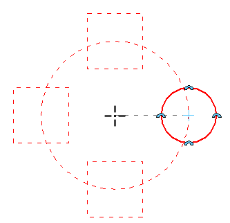
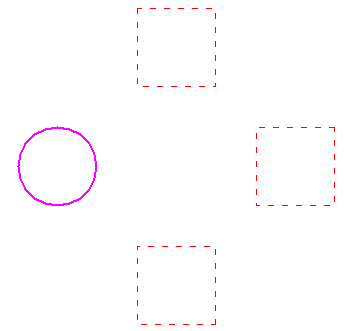
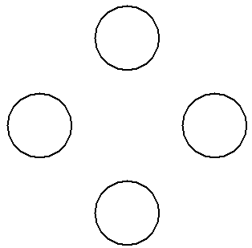
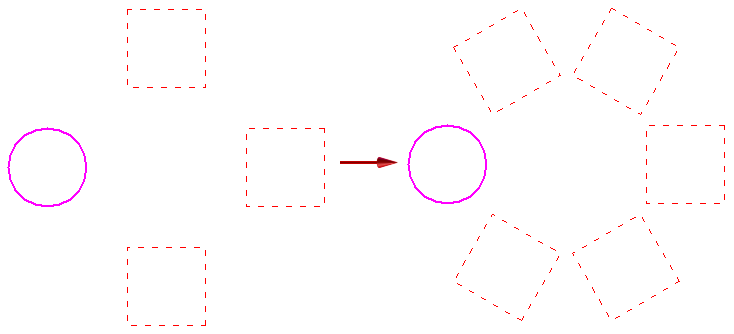

Draw a circular pattern (Draft)
-
Select one or more elements to pattern.
Note:You can also start the command and then select the elements for patterning.
-
Choose Sketching tab→Draw group→Mirror split button→Circular Pattern command
 .
.A dynamic preview of the default pattern is shown.

-
Use the Circular Pattern command bar options and the Circular Pattern Options dialog box to define the characteristics of the pattern. For example, type a value in the Angle box to specify a pattern of 90 degrees or 360 degrees.
-
Click where you want the center of the circular pattern to be.
A static preview of the pattern is shown.

-
Click Finish to draw the pattern.

Until you click Finish, you can continue to adjust the pattern count and angle.
For example, you can type a different number in the Count box and press Enter to change the number of pattern members.
